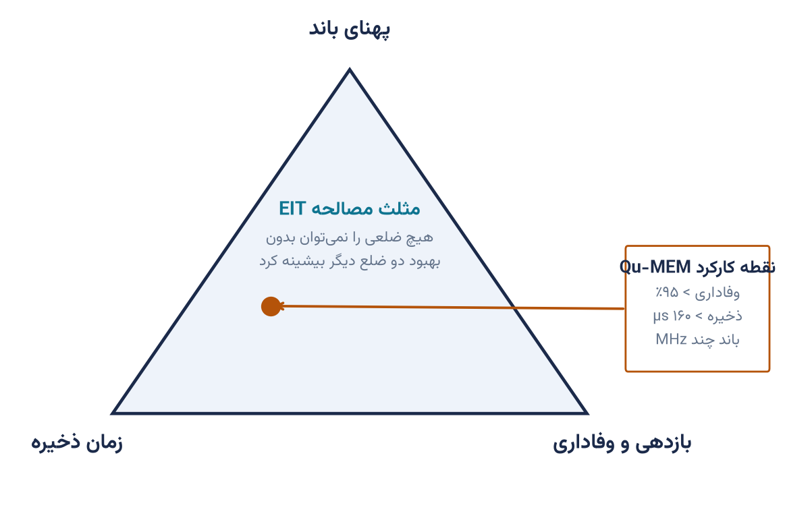

۰
معماری فیزیکی و کمیتهای هدف
ماه ۰–۳TRL 1–2مهندسی محصول از انتخابی آغاز میشود که هیچ بستهبندی نمیتواند جبرانش کند: نقطه کارکرد روی مثلث مصالحه EIT. برای حافظه شبکه شهری، این نقطه «وفاداری و زمان ذخیره» است، نه پهنای باند.
- اتم ⁸⁷Rb غنیشده و خط D₁ در ۷۹۵ نانومتر
- طرح ترازی Λ با شکافتگی فوقریز 6834.68 مگاهرتز
- بخار گرم ۴۰ تا ۹۰ درجه — بدون کریوژن و خلأ
- قطبشهای σ⁺/σ⁻ برای سرکوب نویز رامان
سنجه خروجی — G1سند کمیتهای هدف: وفاداری >۹۵٪، ذخیره >۱۶۰µs، قالب 2U
